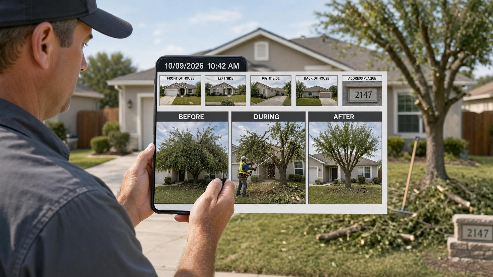

Built for contractors just starting out. Use it even if you never send us a single order.
Your work does not end when you leave the property. It moves into a chain of desk work, and every link decides whether you get paid or get a reopen.
First come the photos. They are your proof. If they are unclear or incomplete, nothing after them holds up.
Next is the scope. Someone reads the work order instructions and the property condition, then decides what was requested, what was done, and what still needs a bid.
Then comes the bid. If the property needs more work than the order covers, you write a bid with the right line item, a clear description, and measurements. A vague bid gets rejected or cut down.
After that is the completion entry. You match your photos to each task and record what was done. A missing photo here is a common reason an order comes back.
Last is the invoice. It has to match what was approved and what the allowables permit. Anything extra gets deducted.
Each step depends on the one before it. A weak photo set weakens the scope. A weak scope weakens the bid. When something breaks, you usually find out days later as a reopen, a deduction, or a backcharge. Fixing it then costs far more time than getting it right the first time.
A processor can only work with what you give them. Send the same short set every time, and orders move faster with fewer questions.
Short notes beat long messages. If you are still on site, say so. A good processor will tell you what is missing before you drive away.

Before, during, and after for every task. One task, three views. If you cut grass, show the lot before, a shot of the work, and the finished lot. If you board a window, show the opening, the boards going on, and the result.
Cover every instruction. Read the work order line by line. If it asks for an address photo, a street sign, or a roof shot, take it. Missing a listed photo is one of the easiest reopens to avoid.
Datestamps matter. Portals check dates. A photo with no date, or the wrong date, can be questioned even when the work was done. Keep your camera date correct and your timestamps on.
Seasonal reuse for recurring cuts. Where portal rules allow, photos for recurring grass cuts can be reused properly across a season. Ask your processor how it works for each portal so you do not reshoot what you do not have to.
A few extra photos cost you seconds. A reopen costs you a return trip.
Each one is common. Each one has a price, and you usually pay it weeks after the work is done.
None of these are field skill problems. They are paperwork problems, and they are fixable. A good processor checks for all five before anything is submitted, so you hear about a gap while you are still on site, not after a deduction lands.
The split is simple. You keep the field work and the photos. We take the desk work.
That means photo review, bid writing, property condition reports, completion entries, invoices, and notes. Every order gets a backcharge prevention review before it is submitted.
You do not need to give us portal access to start. Send one work order with the details, the instructions, and the photos. We can draft your bids in Google Docs for you to review. If you like the work, you can choose full processing later and give portal access then.
Here is how a trial order goes. You send one order. We review the photos, tell you what is missing, and prepare the work. You see exactly how it is handled before you commit to anything. If it fits, send more. If it does not, you have lost nothing.
Pricing is per order. There are no monthly fees and no long term contracts, so the cost grows only when your volume does.
Start with one trial orderSee pricingMessage us. We answer new vendors every day.
Email usMessage us on WhatsApp